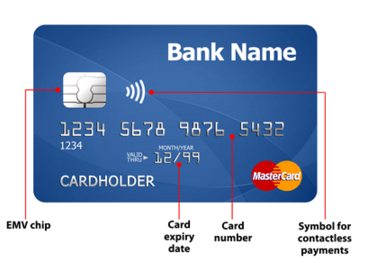
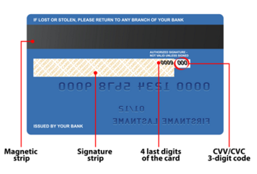

The digital financial tools helps you to make online transaction at anytime and if you availed this kind of facility so there is no need to visit any bank, to fill the form, stand in queue and needs to wait for the result.
Use of QR code:
1) View a menu in a restaurant.
2) Get directions to a location in Google Maps.
3) Read more about a product or service.
4) Download an app on the App Store or Google Play.
5) Authenticate an online account or Verify login details.
6) Access Wi-Fi by storing SSID, password, and encryption type.
7) Online transaction or Send and receive payment information.
Owner and Developed by : NPCI (National Payments Corporation of India)
Introduced in : 11 April 2016
The following are the services AEPS provides:
1) Cash Deposit
2) Balance Enquiry
3) Cash Withdrawal
4) Aadhaar to Aadhaar Funds Transfer
5) A mini-statement
The services are:
1) Send Money
2) Request Money
3) Check Balance
4) My Profile
5) Pending Requests
6) Transactions
7) UPI Pin
What is a Debit Card?
A Debit card is issued by a bank against your current account or savings account. The major point to be noted about a debit card is that it allows you to use only the amount of money that’s available in your bank account at the moment. This implies that as you make payment using your debit card, the amount of purchase will directly be debited from your current or savings account.
What is a Credit Card?
A Credit card is a financial tool that allows you to borrow funds from your credit card issuer at the luxury of making purchases as and when required. Additionally, to repay the borrowed amount, you get a grace period of around 45 days without any interest charges on the billed amount. When you buy a credit card, you get a customized credit limit, which indicates the maximum amount that you can spend using your credit card.
Similarities in a Debit Card and Credit Card :-
1) Both of these cards look identical and have a 16-digit card number.
2)A debit card and a credit card have expiration date.
3) In order to make a transaction, using either of these cards, you must enter a PIN (Personal Identification Number) code.
4)Both, debit card and credit card can be used to make online and offline purchases.
5)Both these cards can be used at an ATM in order to withdraw money.
| According To | Debit Card | Credit Card |
|---|---|---|
| 1) Usage | Allow you to purchases using the amount in your current and saving account. | Allow you to make purchases by borrowing funds from the bank. |
| 2) Interest Charges | No interest charges applicable. | Interest charges applicable on late repayment of the billed amount. |
| 3) Source of Money | Money deducted/used from your current/savings account. | Money borrowed from bank/credit card issuing company. |
| 4) Eligibility Criteria | No Specific eligibility criteria to be fulfilled . | You must meet some specific eligibility condition of income, age etc. |
| 5)Charges | Allowed, without any additional charges | Allowed, with additional charges. |
| 6)Additional benefit | No, additional benefit | Cashback, reward point, vouchers etc to be redeemed on future purchases. |
| Card Front Image | Card Back Image |
|---|---|
|  |  |
✬ EMV chip - EMV is short for Europay, Mastercard and Visa: the three companies that created the EMV standard. A chip that stores payment card information for payments on electronic payment terminals.
✬ CVV / CVC -The CVV full form is (Card Verification Value) and the CVC full form is (Card Verification Code) . It is a 3-digit verifiaction code that is located on the back of your card; this code is required for online payments.
E-wallet stands for electronic wallet. It is a type of electronic card which is used for transactions made online through a computer or a smartphone. The utility of e-wallet is same as a credit or debit card. An e-wallet needs to be linked with the individual's bank account to make payments. The main objective of e-Wallet is to make paperless money transaction easier.
How does it work?
E-wallet has mainly two components, software and information.
Software component stores personal information and provides security and encryption of the data whereas information component is a database of details provided by the user which includes their name, shipping address, payment method, amount to be paid, credit or debit card details, etc.
The point of sale (POS) or point of purchase (POP) is the time and place at which a retail transaction is completed. At the point of sale, the merchant calculates the amount owed by the customer, indicates that amount, may prepare an invoice for the customer (which may be a cash register printout), and indicates the options for the customer to make payment.
After receiving payment, the merchant may issue a receipt for the transaction, which is usually printed but can also be dispensed with or sent electronically.
Internet banking, also known as online banking, e-banking or virtual banking, is an electronic payment system that enables customers of a bank or other financial institution to conduct a range of financial transactions through the financial institution's website.
Different types of online financial transactions are:
Online bill pay is a digital banking or payment service that lets you pay bills over the web from a bank account—often at no extra cost.
Some example:
1) Electricity Bill
2) Fast Tag Recharge
3) Mobile bill/ recharge
4) Gas Connection payment
5) Dish TV (DTH )
6) Wifi Recharge
7) Metro Recharge.
8)House Tax